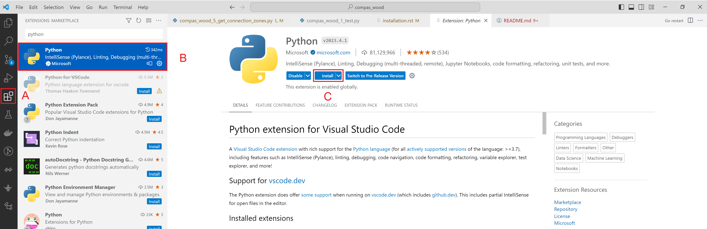
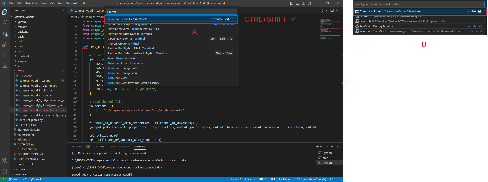
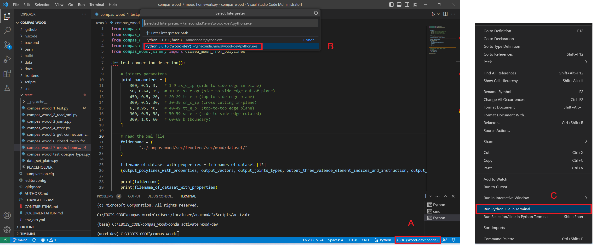

Installation
Windows
conda create -n wood-dev python=3.8 mpir mpfr boost-cpp eigen=3.4 cgal-cpp=5.5 pybind11 compas compas_view2 --yes
conda activate wood-dev
git clone https://github.com/petrasvestartas/compas_wood.git
cd compas_wood
pip install -e .
Mac
conda create -n wood-dev python=3.8 gmp mpfr boost-cpp eigen=3.4 cgal-cpp=5.5 pybind11 compas compas_view2 --yes
conda activate wood-dev
git clone https://github.com/petrasvestartas/compas_wood.git
cd compas_wood
pip install -e .
If you never used VSCode, Anaconda, Git
Step 0 - Install git (https://git-scm.com/downloads)
Step 1 - Install C++ compiler, for windows download “Visual Studio 2019” (https://visualstudio.microsoft.com/downloads/), for MAC download “Xcode” (https://developer.apple.com/xcode/)
Step 2 - download “Anaconda” (https://www.anaconda.com/products/distribution) and install it, during installation mark the option to add the path to the environment variables.
Step 3 - run the “Anacond Prompt” terminal using Administrative rights
Step 4 - update conda
conda config --add channels conda-forge
Step 5 - using Anaconda Prompt write a series commands to create an environment:
conda create -n wood-dev python=3.8 mpir mpfr boost-cpp eigen=3.4 cgal-cpp=5.5 pybind11 compas compas_view2 --yes
conda activate wood-dev
git clone https://github.com/petrasvestartas/compas_wood.git
cd compas_wood
pip install -e .
Step 6 - install VSCode (https://code.visualstudio.com/download)
Step 7 - install Python extension in VScode

Step 8 - change default terminal to “Command Line”, type “Ctrl+Shift+P” and type “Select Default Shell” and select “Command Line”

Step 9 - change the environment to “wood-dev”, type “Ctrl+Shift+P” and type “Python: Select Interpreter” and select “wood-dev”. Finally go to tests folder, open any file, right click on the canvas and click “Run Python file in Terminal”

Even if the first time the whole installation seems complex, this process is standard to other compas packages, following this link: https://compas.dev/compas/latest/installation.html
Rhino Grasshopper
Open Anaconda Prompt:
conda activate wood-dev
python -m compas_rhino.install
python -m compas_rhino.install -p compas_wood
Download the zipped files and place them in libraries folder.
Current suppoorted Grasshopper is version is Windows only.
You can find this folder when you open Grasshopper.
File->Special Folder->Component Folder.
https://github.com/petrasvestartas/compas_wood/releases/tag/compas_wood_GH_1.0.0
C++
Step 1: Create a build directory and go into it
cd C:\IBOIS57\_Code\Software\Python\compas_wood\backend\
mkdir build_win
cd build_win
Step 2: Download libraries via CMake
cmake --fresh -DGET_LIBS=ON -DCOMPILE_LIBS=OFF -DBUILD_MY_PROJECTS=OFF -DRELEASE_DEBUG=ON -DCMAKE_BUILD_TYPE="Release" -G "Visual Studio 17 2022" -A x64 .. && cmake --build . --config Release
Step 3: Build 3rd-party libraries (this part compiles 3rd party libraries to static libraries that reduces compilation time while working with C++)
cmake --fresh -DGET_LIBS=OFF -DBUILD_MY_PROJECTS=ON -DCOMPILE_LIBS=ON -DRELEASE_DEBUG=ON -DCMAKE_BUILD_TYPE="Release" -G "Visual Studio 17 2022" -A x64 .. && cmake --build . --config Release
Step 4: Build the code (precompiled header is compiled to reduce the compilation time)
cmake --fresh -DGET_LIBS=OFF -DBUILD_MY_PROJECTS=ON -DCOMPILE_LIBS=OFF -DRELEASE_DEBUG=ON -DCMAKE_BUILD_TYPE="Release" -G "Visual Studio 17 2022" -A x64 .. && cmake --build . --config Release
Step 5 - Run the code - you can use this as a default VScode task:
cmake --build C:\\IBOIS57\\_Code\\Software\\Python\\compas_wood\\backend\\build_win\\ -v --config Release --parallel 8 && C:\\IBOIS57\\_Code\\Software\\Python\\compas_wood\\backend\\build_win\\Release\\wood.exe